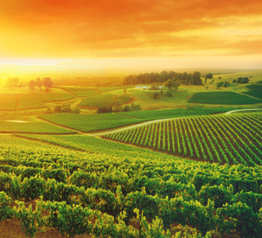

A vida no campo e na cidade, desvendando as diferenças de ritmo e espaço
Agronegóciocompreende na produção de grãos, na pecuária, atividades de agroindústria, produção de insumos e sementes
O Campo éáreas geográficas com baixa densidade populacional e atividades econômicas principalmente relacionadas á agricultura
